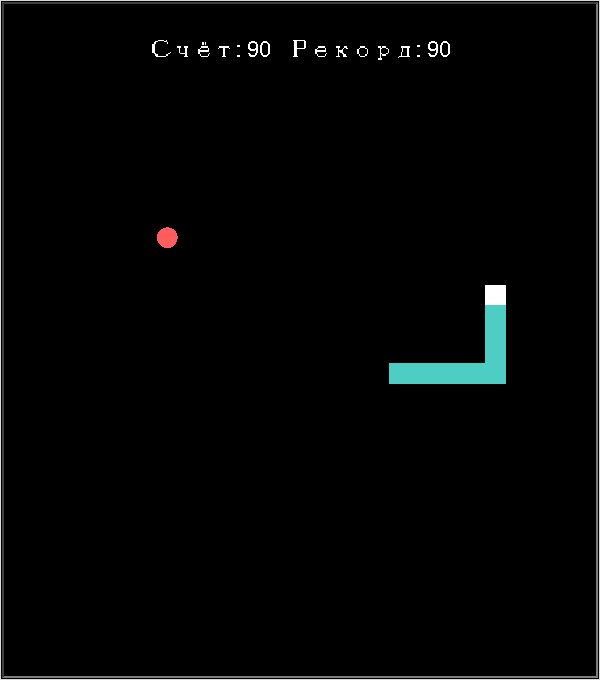

Глава 19 · Финал
Snake Pro — финальная игра
Тот же самый прототип из раздела 19.1 — но теперь с моделью состояния, игровым тиком и архитектурой, которая выдержит рост проекта.
Итоговая программа

Файл целиком, самодостаточный и без невидимых зависимостей от других уроков:
📄 projects/turtle/snake/snake.py
snake.py — структура
class Direction(Enum): ...
class GameStatus(Enum): ...
@dataclass
class GameState: ...
def next_head(head, direction): ...
def move_snake(snake, new_head, *, grow): ...
def is_wall_collision(head): ...
def is_self_collision(new_head, body_after_move): ...
def choose_food(snake, rng): ...
def calculate_delay(score): ...
def new_game_state(rng, *, high_score=0): ...
class SnakeApp:
def __init__(self, *, rng=None): ...
def bind_keys(self): ...
def request_direction(self, direction): ...
def game_tick(self): ...
def toggle_pause(self): ...
def restart(self): ...
def render(self): ...
def run(self): ...
def main():
app = SnakeApp()
app.run()
if __name__ == "__main__":
main()Запустите игру у себя
python snake.py в терминале. Стрелки или WASD — движение, Space — пауза, R — новая игра. Сравните с snake_basic.py (раздел 19.8) — та же идея игры, но совершенно другая внутренняя архитектура.Чек-лист готового приложения
МОДЕЛЬ
- GameState — snake, direction, food, score, status, delay_ms, без Turtle внутри
- чистые функции правил — next_head, move_snake, is_wall_collision, is_self_collision, choose_food, calculate_delay
- новая голова + старое тело вместо цикла по сегментам
ЦИКЛ
- тик через screen.ontimer(), без busy-цикла и time.sleep()
- клавиатура запрашивает направление, тик его применяет
- поколение (generation) защищает от параллельных цепочек тиков
ФУНКЦИИ ИГРЫ
- pause/resume без пересоздания змейки
- restart с сохранением рекорда
- скорость растёт вместе со счётом, не опускаясь ниже минимума
ТЕСТИРОВАНИЕ
- правила протестированы без единого настоящего окна
- детерминированная еда через random.Random(seed)
- render() переиспользует пул Turtle-сегментов
Небольшая визуальная палитра
Финальная игра использует всего пять цветов — не для того, чтобы выглядеть скромно, а потому что различать голову, тело и еду проще по контрасту, а не по количеству оттенков:
Фон
#000000
#000000
Голова
#FFFFFF
#FFFFFF
Тело
#4ECDC4
#4ECDC4
Еда
#FF5D5D
#FF5D5D
Текст
#FFFFFF
#FFFFFF
Практика: Snake Pro целиком
Модуль turtle открывает нативное окно Python — выполните локально в VS Code, PyCharm или Jupyter
Практика выполняется локально